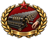
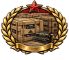

新生的苏维埃主席
GFX_hof_ic_new_soviet_chairman高清原图左：100×88 实际尺寸，右：2 倍预览。背景由网页绘制，图片本身透明。非游戏截图。
文件清单GFX_hof_ic_new_soviet_chairman高清原图GFX_hof_ic_united_supreme_soviet高清原图GFX_hof_ic_seat_lev_trotsky高清原图GFX_hof_ic_seat_nikolay_bukharin高清原图GFX_hof_ic_seat_aleksey_rykov高清原图GFX_hof_ic_seat_grigory_zinovyev高清原图GFX_hof_ic_seat_lev_kamenev高清原图GFX_hof_ic_seat_ivan_smirnov高清原图GFX_hof_ic_seat_leonid_serebryakov高清原图
GFX_hof_ic_seat_yevgeny_preobrazhensky高清原图
GFX_hof_ic_seat_karl_radek高清原图
GFX_hof_ic_seat_ivar_smilga高清原图
GFX_hof_ic_seat_mikhail_tomsky高清原图
GFX_hof_ic_seat_martemyan_ryutin高清原图
GFX_hof_ic_seat_aleksandr_shlyapnikov高清原图
GFX_hof_ic_seat_mikhail_kalinin高清原图
GFX_hof_ic_seat_maksim_litvinov高清原图
GFX_hof_ic_seat_grigory_sokolnikov高清原图
GFX_hof_ic_seat_mikhail_tukhachevsky高清原图
GFX_hof_ic_seat_nikolay_voznesensky高清原图
GFX_hof_ic_seat_pyotr_smirnov高清原图
GFX_hof_ic_seat_georgy_malenkow高清原图
GFX_hof_ic_seat_nikita_khrushchyov高清原图
GFX_hof_ic_seat_kliment_voroshilov高清原图GFX_hof_ic_trotsky_build_the_red_army高清原图GFX_hof_ic_trotsky_military_specialists高清原图GFX_hof_ic_trotsky_against_partisan_warfare高清原图GFX_hof_ic_trotsky_uneven_and_combined_development高清原图GFX_hof_ic_trotsky_permanent_revolution高清原图GFX_hof_ic_trotsky_socialism_in_one_country高清原图GFX_hof_ic_trotsky_the_new_course高清原图GFX_hof_ic_trotsky_against_the_bureaucracy高清原图GFX_hof_ic_trotsky_limited_market_reforms高清原图GFX_hof_ic_trotsky_labour_armies高清原图GFX_hof_ic_trotsky_state_planning高清原图GFX_hof_ic_trotsky_accelerated_industrialization高清原图GFX_hof_ic_trotsky_the_comintern_manifesto高清原图GFX_hof_ic_trotsky_the_chinese_question高清原图GFX_hof_ic_trotsky_united_front高清原图GFX_hof_ic_trotsky_the_permanent_revolutionary高清原图GFX_hof_ic_trotsky_the_builder_of_the_state高清原图GFX_hof_ic_bukharin_economics_of_transition高清原图
GFX_hof_ic_bukharin_nep_is_not_a_retreat高清原图
GFX_hof_ic_bukharin_abolish_the_tribute高清原图
GFX_hof_ic_bukharin_alliance_is_the_axis高清原图
GFX_hof_ic_bukharin_enrich_yourselves高清原图
GFX_hof_ic_bukharin_proportional_development高清原图
GFX_hof_ic_bukharin_cooperatives_into_the_system高清原图
GFX_hof_ic_bukharin_left_communism高清原图
GFX_hof_ic_bukharin_socialism_in_one_country高清原图GFX_hof_ic_rykov_supreme_economic_council高清原图GFX_hof_ic_rykov_food_supply_commissar高清原图GFX_hof_ic_rykov_labour_defence_council高清原图GFX_hof_ic_rykov_sponsor_aviation高清原图GFX_hof_ic_rykov_labour_defence_chair高清原图
GFX_hof_ic_zinovyev_found_the_comintern高清原图
GFX_hof_ic_zinovyev_twenty_one_conditions高清原图
GFX_hof_ic_zinovyev_social_fascism高清原图
GFX_hof_ic_zinovyev_bolshevization高清原图
GFX_hof_ic_zinovyev_congress_of_the_east高清原图
GFX_hof_ic_zinovyev_workers_united_front高清原图
GFX_hof_ic_zinovyev_speed_and_route高清原图
GFX_hof_ic_zinovyev_party_in_revolution高清原图
GFX_hof_ic_zinovyev_trade_unions高清原图
GFX_hof_ic_zinovyev_monolithic_international高清原图
GFX_hof_ic_zinovyev_mass_international高清原图GFX_hof_ic_kamenev_lenins_charge高清原图GFX_hof_ic_kamenev_leninism高清原图GFX_hof_ic_kamenev_against_the_lessons高清原图GFX_hof_ic_kamenev_lenin_institute高清原图GFX_hof_ic_kamenev_executor_of_the_will高清原图
GFX_hof_ic_smirnov_the_volga_bridgehead高清原图
GFX_hof_ic_smirnov_the_fifth_army高清原图
GFX_hof_ic_smirnov_sibrevkom高清原图
GFX_hof_ic_smirnov_far_eastern_republic高清原图
GFX_hof_ic_smirnov_posts_and_telegraphs高清原图
GFX_hof_ic_smirnov_siberian_lenin高清原图GFX_hof_ic_serebryakov_kostroma高清原图GFX_hof_ic_serebryakov_central_committee高清原图GFX_hof_ic_serebryakov_commissariat_of_transport高清原图GFX_hof_ic_serebryakov_highways_and_motor_transport高清原图GFX_hof_ic_serebryakov_brilliant_worker高清原图
GFX_hof_ic_preobrazhensky_agrarian_theses高清原图
GFX_hof_ic_preobrazhensky_scissors高清原图
GFX_hof_ic_preobrazhensky_against_nepmen高清原图
GFX_hof_ic_preobrazhensky_two_regulators高清原图
GFX_hof_ic_preobrazhensky_primitive_accumulation高清原图GFX_hof_ic_radek_central_europe_department高清原图GFX_hof_ic_radek_founding_of_the_kpd高清原图GFX_hof_ic_radek_seven_pamphlets高清原图GFX_hof_ic_radek_german_october高清原图GFX_hof_ic_radek_sunyatsen_university高清原图GFX_hof_ic_radek_red_publicist高清原图GFX_hof_ic_radek_the_struggle_for_power_in_china高清原图GFX_hof_ic_radek_the_condition_of_the_chinese_working_class高清原图GFX_hof_ic_radek_social_and_political_thought高清原图
GFX_hof_ic_smilga_finland高清原图
GFX_hof_ic_smilga_fuel_main_directorate高清原图
GFX_hof_ic_smilga_gosplan高清原图
GFX_hof_ic_smilga_economics_institute高清原图
GFX_hof_ic_smilga_productive_forces高清原图
GFX_hof_ic_smilga_the_healer_of_the_gaps高清原图
GFX_hof_ic_tomsky_printers_union高清原图
GFX_hof_ic_tomsky_moscow_trade_union_council高清原图
GFX_hof_ic_tomsky_central_council_of_trade_unions高清原图
GFX_hof_ic_tomsky_platform_of_ten高清原图
GFX_hof_ic_tomsky_the_silence_of_1921高清原图
GFX_hof_ic_tomsky_man_from_tomsk高清原图
GFX_hof_ic_ryutin_struggle_magazine高清原图
GFX_hof_ic_ryutin_red_star高清原图
GFX_hof_ic_ryutin_soyuzkino高清原图
GFX_hof_ic_ryutin_union_of_marxist_leninists高清原图
GFX_hof_ic_ryutin_verkhne_ryutino高清原图
GFX_hof_ic_shlyapnikov_workers_control高清原图
GFX_hof_ic_shlyapnikov_not_syndicalism高清原图
GFX_hof_ic_shlyapnikov_producers_congress高清原图
GFX_hof_ic_shlyapnikov_through_the_workers高清原图
GFX_hof_ic_shlyapnikov_qualification_from_the_shop高清原图
GFX_hof_ic_shlyapnikov_the_body_they_elect高清原图GFX_hof_ic_kalinin_a_peasant_head_of_state高清原图GFX_hof_ic_kalinin_down_with_illiteracy高清原图GFX_hof_ic_kalinin_the_state_of_the_whole_people高清原图GFX_hof_ic_kalinin_the_reception_room高清原图GFX_hof_ic_kalinin_an_unfounded_operation高清原图GFX_hof_ic_kalinin_the_all_union_elder高清原图GFX_hof_ic_litvinov_a_courier_of_iskra高清原图GFX_hof_ic_litvinov_the_prisoner_exchange_agreement高清原图GFX_hof_ic_litvinov_the_litvinov_protocol高清原图GFX_hof_ic_litvinov_the_definition_of_aggression高清原图GFX_hof_ic_litvinov_the_franco_soviet_treaty高清原图GFX_hof_ic_litvinov_the_advisor_to_the_commissariat高清原图GFX_hof_ic_sokolnikov_the_nationalisation_of_the_banks高清原图GFX_hof_ic_sokolnikov_the_turkestan_rouble高清原图GFX_hof_ic_sokolnikov_the_chervonets高清原图GFX_hof_ic_sokolnikov_what_a_dollar_costs高清原图GFX_hof_ic_sokolnikov_state_capitalism高清原图GFX_hof_ic_sokolnikov_hard_currency高清原图GFX_hof_ic_tukhachevsky_the_military_academy高清原图GFX_hof_ic_tukhachevsky_the_regular_army高清原图GFX_hof_ic_tukhachevsky_airborne_and_tanks高清原图GFX_hof_ic_tukhachevsky_the_deep_battle_instructions高清原图GFX_hof_ic_tukhachevsky_the_four_echelons高清原图GFX_hof_ic_tukhachevsky_the_field_regulations高清原图GFX_hof_ic_tukhachevsky_the_defence_of_the_union高清原图GFX_hof_ic_tukhachevsky_military_economic_mobilization高清原图GFX_hof_ic_tukhachevsky_air_mechanization高清原图GFX_hof_ic_voznesensky_the_fight_for_the_plan高清原图GFX_hof_ic_voznesensky_the_leningrad_plan高清原图
GFX_hof_ic_voznesensky_the_state_planning_committee高清原图
GFX_hof_ic_voznesensky_the_placement_of_plants高清原图GFX_hof_ic_voznesensky_the_ammunition_plan高清原图GFX_hof_ic_voznesensky_the_war_economy高清原图GFX_hof_ic_pyotr_smirnov_the_naval_directorate高清原图GFX_hof_ic_pyotr_smirnov_the_general_staff高清原图GFX_hof_ic_pyotr_smirnov_the_naval_aviation高清原图GFX_hof_ic_pyotr_smirnov_the_declaration高清原图GFX_hof_ic_pyotr_smirnov_the_military_council高清原图GFX_hof_ic_pyotr_smirnov_the_commissariat高清原图GFX_hof_ic_malenkow_the_party_card_index高清原图GFX_hof_ic_malenkow_the_cadres_directorate高清原图GFX_hof_ic_malenkow_the_state_defence_committee高清原图GFX_hof_ic_malenkow_the_aviation_affair高清原图GFX_hof_ic_malenkow_the_party_schools高清原图GFX_hof_ic_malenkow_the_premiership高清原图GFX_hof_ic_khrushchev_the_workers_faculty高清原图GFX_hof_ic_khrushchev_the_obligatory_deliveries高清原图GFX_hof_ic_khrushchev_the_agro_towns高清原图GFX_hof_ic_khrushchev_the_purchase_prices高清原图GFX_hof_ic_khrushchev_the_virgin_lands高清原图GFX_hof_ic_khrushchev_the_economic_councils高清原图
GFX_hof_ic_voroshilov_the_red_army_commanders高清原图GFX_hof_ic_voroshilov_the_marksmanship_badge高清原图
GFX_hof_ic_voroshilov_the_ranks高清原图
GFX_hof_ic_voroshilov_the_partisan_staff高清原图
GFX_hof_ic_voroshilov_war_trophies_regulation高清原图
GFX_hof_ic_voroshilov_the_allied_control_commission高清原图